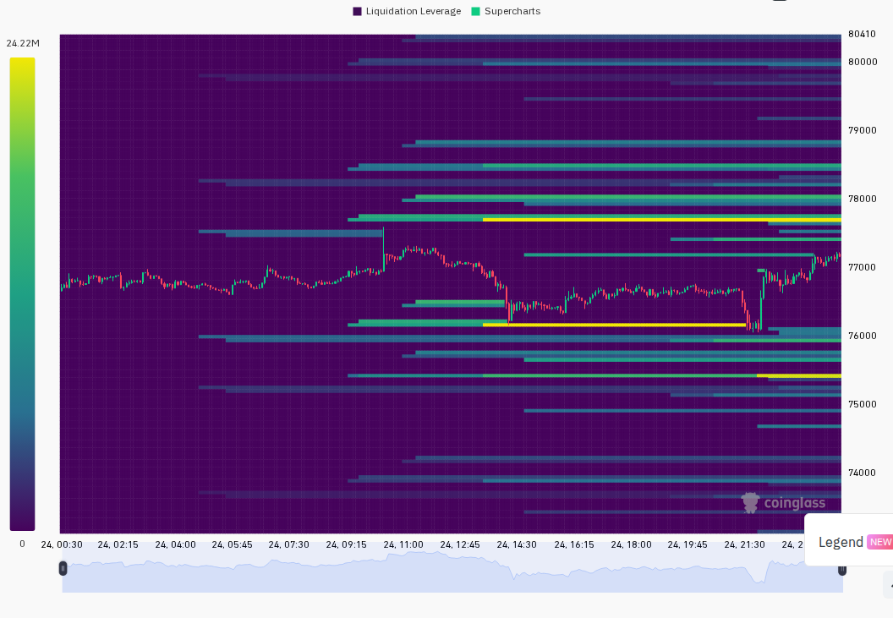

The full report was just generated 6 minutes ago with all data sources freshly pulled — no market-moving events have occurred since. Here it is:
每日加密市场情绪深度报告
Date: 2026-05-25 08:00 UTC+8 | Analyst: Researcher
=== 第一段：叙事与风险面 ===
Trump遭党内强硬派攻击("伊朗协议过于让步")+鲸鱼3天内抛售35,000 ETH压制风险偏好，BTC勉强维持+0.5%绿盘但ETH/SOL双双转红；但Iran浓缩铀做出"严肃且前所未有的让步"是自停火启动以来最实质性协议进展，F&G从25回升至30恐惧缓慢退潮。(multi-source, analysis)
24h变化: 情绪 +10(较昨日↘-5) | BTC ↗0.5% | ETH ↘0.8% | SOL ↘0.6% | VIX 16.7(正常) | F&G 30(恐惧↗+5) | 成交量 ↘18% | 爆仓 ↘53% (multi-source)
BTC / ETH / SOL
伊朗协议从"即将宣布"进入"实质让步但党内阻力"新阶段。
信息 1: 美国高级官员透露Iran在浓缩铀问题上做出"严肃且前所未有的让步"——最具体协议进展。但Trump称协议"尚未完全谈妥"、遭党内强硬派攻击"过于让步"。(BlockBeats)
信息 2: BTC +0.5%绿盘($77,104)，ETH -0.8%和SOL -0.6%转红。全市场24h爆仓$4.38亿(-52.6%)连续塌缩。SOL资金费率Binance翻负(-0.46%)。(Binance, CoinGecko, Coinglass)
信息 3: 鲸鱼3天抛售35,000 ETH(均价$2,066)+CEX 7天净流入18,528 BTC($14.3亿)——双重卖压信号。(BlockBeats)
ETF / 宏观 / 监管
信息 4: 美股/港股周一休市(Memorial Day)。F&G 30(恐惧,↗+5)。SPX 7,473(+0.37%), VIX 16.7(正常)。DXY 99.28(7日+0.27), US10Y 4.612%(7日+9.9bp)。(BlockBeats, Alternative.me, Yahoo Finance)
DeFi / Meme / 融资
信息 5: Basechain DEX维持领先Solana。RAIL +13.9%较前日+73%大幅回撤(买卖比160:346净卖出)。Kalshi $2亿融资。(BlockBeats, CoinGecko, Dexscreener)
板块轮动(CoinGecko):
信息 6: Action Games 48h从+34.3%崩至-29.9%——GameFi叙事全面退潮。涨幅前三: Quest-to-Earn +24.1%, Morpho Ecosystem +15.5%, Data Availability +14.5%。(CoinGecko)
风险 1: Iran让步遭Trump党内攻击→ 观察: 若周二前党内反对扩大，协议可能延迟。失效条件: Trump 48h内压制反对。(BlockBeats)
风险 2: CEX流入18,528 BTC+鲸鱼抛售35,000 ETH→ 观察: 本周ETF数据。失效条件: ETF流出减缓或转流入。(BlockBeats)
风险 3: Action Games 48h崩至-30%→ 观察: 是否有第二个板块同样崩盘。失效条件: Quest-to-Earn维持正涨幅。(CoinGecko)
风险 4: SOL资金费率翻负+全线PremiumIndex折价→ 观察: SOL守住$83.70。失效条件: SOL站回$86+费率回正。(Binance, CoinGecko)
非财务建议声明: 本报告仅提供市场数据和情绪分析，不构成任何买卖建议。
- 5月25日(周日): 伊朗协议宣布窗口。(BlockBeats)
- 5月26日(周一): 美股港股休市+Binance Alpha上线Citrea。(BlockBeats)
- 5月26-30日: BTC/ETH ETF周报。(analysis)
- 5月28-29日: 美国PCE通胀数据。(analysis)

=== 第二段：数据与技术面 ===
整体评分: +10/100 (↘-5 较昨日)
新闻情绪: +15/100 ↘-5 — Iran让步实质性但Trump遭党内攻击。F&G 30边际改善。(BlockBeats, Alternative.me)
价格/成交量: -5/100 ↘-5 — BTC +0.5%勉强、ETH/SOL转红。成交量$674亿(-18%)。BTC V反$77,104但无量。(Binance, CoinGecko, Coinglass)
DEX/meme 活跃度: +15/100 ↘-10 — RAIL回撤至+13.9%净卖出。14个>$1M Solana池多大幅回撤。(GeckoTerminal, Dexscreener)
宏观/ETF/流动性: -20/100 ↗+5 — US10Y 7日+9.9bp, 美股周一休市。(Yahoo Finance, BlockBeats)
杠杆与风险: 0/100 ↘-10 — 爆仓$4.38亿(-52.6%), LS 51.26:48.74, SOL FR翻负。(CoinGecko, Coinglass, Binance)
BlockBeats底部顶部指标完整分解(BlockBeats):
· 市场脉动指数: (空)
· 整体市场流动性指数: Hold
· 比特币流动性指数: Hold
· 以太坊流动性指数: Hold
· 过去24小时累积比特币流动性指数: Hold
· 整体市场流动性(以BTC为单位): Hold
· 合约多空比偏离指数: Hold
· 山寨币抗跌指数: Caution
· Bitfinex BTC/USD 溢价: Hold
· USDC/USDT 溢价: Buy
· Binance USDT 借贷利率: Buy
· 持仓量加权资金费率年化利率: Hold
综合: 2 Buy / 0 Sell / 1 Caution / 9 Hold — 山寨币从Sell改善为Caution(BlockBeats)
- BTC: $77,104(Binance), 24h +0.5%, 高$77,543/低$76,108。PremiumIndex折价-0.048%。(Binance, CoinGecko)
- ETH: $2,101(Binance), 24h -0.8%, 高$2,132/低$2,063。PremiumIndex折价-0.045%。(Binance, CoinGecko)
- SOL: $85.29(Binance), 24h -0.6%, 高$87/低$83.70。PremiumIndex折价-0.060%。(Binance, CoinGecko)
- 全球: MCap $2.65T(+0.16%), Vol $674亿(-17.8%), BTC.D 58.25%。(CoinGecko)
- 衍生品: BTC OI $628亿 FR 0.18~0.66%, ETH OI $390亿 FR 0.26~0.54%, SOL OI $71.2亿 Binance FR -0.46%。(CoinGecko)
- 爆仓$4.38亿(-52.6%), 全球LS 51.26:48.74, TV LS 53.1:46.9。(Coinglass)
- 跨平台OI: Binance $217.9亿(平), Bybit $104.3亿(-1.9%), HL $67.2亿(+1.7%)。(BlockBeats)
- 宏观看板: SPX 7,473 +0.37% | VIX 16.7 | DXY 99.28 | US10Y 4.612% | Gold $4,523。(multi-source)
- 期权: Deribit暂不可用。VIX 16.7正常区间低端。(Yahoo Finance)
HYPE: $63.00, +7.6%, 第7天趋势榜首。DEX: 无HL L1数据。催化剂: 鲸鱼+机构持仓。风险: ATH获利回吐。(CoinGecko, BlockBeats)
RAIL (ETH): $3.89, +13.9%。DEX: liq $712万, vol $248万, 160B:346S净卖出。风险: 热度退潮。(CoinGecko, Dexscreener)
GITLAWB (Base): $0.00022, +2.7%。DEX: liq $509万, 575:489净买入。催化剂: Base超越Solana。(Dexscreener)
SUPER: $0.128, +12.6%, 在GameFi崩盘中逆势。DEX: 无可靠数据。(CoinGecko)
GT Solana趋势池: Stake/SOL $655万(+3490%), RICH/SOL $543万(-59%), GYATT/SOL $280万(-19%)。(GeckoTerminal)
BB Solana净流入: PENGU $644K / CRCLX $591K / EITHER $459K / JLP $378K / TRX $350K。(BlockBeats)
情景 1 (45%, 置信度: 中): 伊朗协议本周二前宣布。BTC→$80K, ETH→$2,200+。关键: Trump压制党内反对。(BlockBeats, analysis)
情景 2 (35%, 置信度: 中): 协议延迟1-2周。BTC $75-78K震荡, 资金向BTC/HYPE集中。关键: Iran让步维持温度。(BlockBeats, analysis)
情景 3 (20%, 置信度: 低): 协议破裂。BTC→$72-73K, ETH→<$1,950。关键: 党内强硬派施压成功。(BlockBeats, analysis)
以上为基于当前数据的概率判断，不构成交易建议。